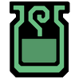
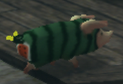

|  | ※ Support is stereotyped as just healing the team, however MHFZ offers possibility for three type of support : Heal, Buff and Control. ※ It is important to use proper weapons and builds for support. Technically any weapon can support, but they will never perform as greatly as the weapons suited for it. ※ For supports, it is also important to understand that a passive support is a dead weight for the team. Any support, whatever their role, HAS TO contribute to the team damage output. | |||||||||||||||||||
| -Heal oriented skills- | ||||||||||||||||||||
|---|---|---|---|---|---|---|---|---|---|---|---|---|---|---|---|---|---|---|---|---|
| Heal support : | ※ The role of a heal support is to keep the team alive, by drinking health-recovering items when necessary, and potentially save them from a oneshot attack (grabs, nukes..). ※ This does not mean the heal support has to babysit the team. The main objective here is to save the squad from critical situations, not to heal their 13 HP missing. ※ As you have to be reactive and bring in the heals extremly fast in appropriated situations, only SnS and LBG are suited for this role, as they can drink while sheathed. ※ SnS or LBG? - It depends the team needs : SnS will heal and limit the monster movements thanks to paralysis. LBG will heal while sustaining high damage that SnS lacks. Suited weapons : | |||||||||||||||||||
| Skilled | × | Skilled | 15 | Grants the effects of Speed Eater, Movement Speed+2, True Guts and Weapon Handling. | Speed Eater is the most important skill to use as heal support. It allows a much faster use of items and pairs perfectly with Wide-Area. SnS and LBG can take the role of a full heal support JUST by using Skilled and nothing else, as it makes lifepowder uses faster aswell, and specifically on Hunter's Road, one can buy lifepowders between floors and always stay at maximum capacity. However if you rely on lifepowders only, keep in mind that they will have to be used just to save a player from death, and not to heal them off. This is a good strategy within a fully end-game squad in wich everyone is experienced, as to maximise the team DPS (SnS and LBG can take just skilled, watch out to save squad members, while dishing a high DPS still for LBG, and fully focus on inflicting paralysis for SnS). | |||||||||||||||
| Wide-Area | ○ | Effective when using Herbs, healing Potions, Antidotes, Nullberries, Power Seeds, Armor Seeds, Fruits, Cool Drinks, Hot Drinks, Anti-Venoms, Violent Ravi Blood. | As said for Skilled, SnS and LBG can perform the role of a healing support using lifepowders only, and popping it out at the right moment. However, this gives them 3 shots only, and restrict their support actions to strictly save someone within an usually short window. This is where Wide-Area shines. The skill gives much more stability and sustainability for the support role (and thus, for the team), as you get to have much more than 3 shots only. In extra of lifepowders, you can now use potions, mega potions and herbs to have a maximum healing capacity on a long period of time. On top of that, you can now assure a buff support role on top of heal support role, as consuming demon/armor potions/pills and fruits will affect everyone. At last but not least, Wide-Area affects Espinas Anti-Venom, which heals off the team from Espinas blight, but also gives the whole squad an insane 40% damage reduction that lasts for a minute, making this skill a precious asset on Hunter's Road. ※ On Hunter's Road, ALWAYS pick Z Espinas. Every squad members should then get 5 flashbombs each, and spam them on Espinas, as to farm Anti-Venoms for the heal support. It gives them the possibility to give everyone a very high survivability on tougher floors. | |||||||||||||||||
| Wide-Area+3 | 30 | Mega Potions, Blight Cure Fruits, Zenith Espinas Anti-Venom and Violent Ravi Blood affect allies in the same area as well as the items covered in Wide-Area+2. | ||||||||||||||||||
| Wide-Area+2 | 20 | Herbs, Potions, Antidotes, Cool Drinks, Hot Drinks, Armor Seed and Power Seed affects allies in the same area. | ||||||||||||||||||
| Wide-Area+1 | 10 | Herbs, Potions, Antidotes, Cool Drinks, Hot Drinks, Armor Seed and Power Seed affects allies in the same area with 50% effectiveness. | ||||||||||||||||||
| Wide-Area-1 | -10 | The Player cannot be healed through Wide-Range Recovery. | ||||||||||||||||||
| All Res Up | × | All Res+20 | 20 | All resistance values increase by 20. | You may notice, Wide-Area+3 requires 30 points to slot in, which is overly costy for a skill that is not Strong Attack. A good strategy to compensate, is to get All Res+20, which costs 20 points instead of 30 for Wide-Area, and get Wide-Area from the Guild Food 'Holy Seafood Banquet' instead. This allows you to use Wide-Area for cheaper while keeping 55+ resistance for every elements. Aside, if your resistances go over 55, you can slot in lower tier of the skill to give you more room for other skills. | |||||||||||||||
| All Res Up+10 | 15 | All resistance values increase by 10. | ||||||||||||||||||
| All Res Up+5 | 10 | All resistance values increase by 5. | ||||||||||||||||||
| All Res-5 | -10 | All resistance values decrease by 5. | ||||||||||||||||||
| All Res-10 | -15 | All resistance values decrease by 10. | ||||||||||||||||||
| All Res-20 | -20 | All resistance values decrease by 20. | ||||||||||||||||||
| Three Worlds | × | Unaffected+3 | 20 | Super High-Grade Earplugs, Violent Wind Breaker and Quake Res+2. | As your role is to save your fellow hunters at any second during a fight, you should always be ready to jump on your items. Three Worlds gives you more ready power, and ensure you are not locked within an animation when your squad needs you the most. This skill allows you to take the corresponding Zenith version of each resistance, which is a nice choice for a support. | |||||||||||||||
| Unaffected+2 | 15 | High-Grade Earplugs, Dragon Wind Breaker and Quake Res+1. | ||||||||||||||||||
| Unaffected+1 | 10 | Earplugs, Wind Resistance (Large) and Quake Res+1. | ||||||||||||||||||
| Caravan • Combination Celebrity | Combination Celebrity | 6220 | Combining items has a chance to produce double the usual results quantity wise. | Caravan skills are more or less free skills, this one is quite wholesome for supports, as it will keep your mega potions stock up longer in a quest. ※ Useless for Hunter's Road. | ||||||||||||||||
| -Buff oriented skills- | ||||||||||||||||||||
| Buff support : | ※ The role of a buff support is to keep the team buffed thanks to Frontier exclusive Soul system, on top of other means (HH songs, SnS & LBG items consumption). ※ Unlike Heal support, Buff support is not a role a hunter can entire dedicate to, it is more of a side effect of their weapon gameplay and synergy with Blazing Grace skill. ※ However, HH is an exception : the weapon built-in buffs are strong enough that sided to Soul skills, the gained team damage and survivability is worth dedicating to buffs. ※ What weapon? - HH aside, any weapon with Soul Up will perform equally as good. LBG and SnS can also use buffing items on top of Soul Up, and gunners got demon ammos. Suited weapons : | |||||||||||||||||||
| Reinforcement | × | All effects last for 2 minutes. | The 3 concerned skills are fused together as they all go hand in hand. Soul skills are introduced in Frontier as a proper way to buff fellow hunters without the use of items. You are not going to use those separately without Soul Up, even on weapons that do not look like support weapons at all by appearance (Gunlance, HBG..). Red Soul is the offensive side of the combo: it will provide +100 True Raw to the squad (including the skill user), and remove stamina consumption when running with unsheathed weapons. Blue Soul is the defensive side of the combo: it will provide +200 Defense to everyone, health recovery effects, and removes abnormal effects when triggered. The idea is to slot in Reinforcement-10 as to have Blue Soul, alongside Blazing Grace that provides Red Soul, and finish with Soul Up as a Zenith skill. One single activation (from hitting a player, or use a sonic bomb) will then trigger all 3 skills at once, for every players in the squad (even if only one player got hit), for about 2 minutes. ※ You can track if Souls are active next to the players name, symbolized by a red fist for Red Soul, and a blue fist for Blue Soul. | |||||||||||||||||
| Red Soul | 10 | Own Attack +15. Hitting another player will increase their Attack +30. ※ When hit by a player who has Blue Soul skill, you gain ability to KO monsters with any weapon when hitting their head and your own Attack rises by +30. ※ Attack is a final addition that is always the stated value and completely unaffected by other skills and multipliers. | ||||||||||||||||||
| Blue Soul | -10 | Own Defense +50. Hitting another player will increase their Defense +100. ※ When hit by a player who has Red Soul skill, you gain Goddess' Embrace effect and your own Defense rises by +100. ※ Hitting a player who is under the effect of Blue Soul while he/she is under any status ailment in the game will dispel the effect. | ||||||||||||||||||
| Blazing Grace | × | Blazing Majesty+2 | 15 | Adrenaline+2, Red Soul, Bombardier, Fire Res+30, Artillery God, Summer Person, Terrain Damage Decreased (Large) Fire Attack Up (Large), Flame Sword+3 and Bomb Sword+3 combined into 1 skill. | ||||||||||||||||
| Blazing Majesty+1 | 10 | Adrenaline+1, Red Soul, Bombardier, Fire Res+20, Artillery Expert, Heat Cancel, Terrain Damage Decreased (Small) Fire Attack Up (Small), Flame Sword+2 and Bomb Sword+2 combined into 1 skill. | ||||||||||||||||||
| Soul Up | Soul Up | 1 | Soul can be applied by using items, attacks will not stagger other players. Red Soul: +100 Attack on both user and players struck. Zero stamina consumption for running with weapons unsheathed. Blue Soul: +200 Defense on both user and players struck. Health Recovery effects, removes most abnormal status effects (Zenith Blights cannot be removed.) This skill works with all sources of Soul meaning you can stack Blue Soul with Red Soul from Blazing Grace and buff both. Attack is a final addition that is always the stated value and completely unaffected by other skills and multipliers. | |||||||||||||||||
| Encourage | × | Encourage+2 | 20 | Flute Expert, and gives to the team (including the skill user) Evasion+2 and Stun Negate. | Must-have skill for HH as to get Flute Expert (HH buffs last 50% longer and allows for more aggressive gameplay, so better DPS). Aside HH, and aside Evasion+2 (any decent build should have their own way to Evasion+2), Stun Negate has a great use, especially on Hunter's Road. It allows a much safer fight against Z3 and Z4 Toridcless, as it provides a complete immunity to its flashes, alongside other monsters encountered in Hunter's Road (e.g. White Fatalis). This makes it a great skill to slot in for a support SnS build (also works for GL and HBG) as a way to get Evasion+2 and bring stun immunity to the team on the way. | |||||||||||||||
| Encourage+1 | 10 | Flute Expert, and gives to the team (including the skill user) Evasion+1 and Stun Halved. | ||||||||||||||||||
| Ice Age | × | Ice Age | 10 | Upon attacking a monster the hunter is surrounded by an icy aura. This aura deals damage to all monsters in its area and grants a number of different skills.This aura has three stages and will progress with more hits. The aura also grants Stamina Recovery Up and Sharp Sword to all hunters affected by the aura and the one with the skill also gets Winter General. Damage is dealt once every second fixed rather than over time. | While Ice Age is always considered for its damaging AoE, it is worth mentioning it gives free Stamina Recovery Up and Sharp Sword to hunters in the range. It does not sound like much, but it is still a cool skill to have on HH and support SnS in general. Also allows for damage outputs while playing a melody at close range with HH. | |||||||||||||||
| -Control oriented skills- | ||||||||||||||||||||
| Control support : | ※ The role of a control support is to restrict the monster movements, by the use of special moves or status. Sleep status being terrible in Frontier, paralysis status is the viable way to go. ※ Short reminder of how terribly broken MS is, thanks to its Pin attack, it clearly shines as a control support weapon despite its incredible natural damage, which is why it makes it here. ※ Most weapons generally have natural low paralysis ammount, the weapons best suited for this role are either exceptions either have a solid ability to stun the monster. ※ What weapon? - MS pin aside, SnS truly shines for this role. Its fast hitting pace, active feature, its access to Fencing+2 and easy use of Furious make it the best paralysis weapon. ※ On top of providing stun, Hammer HH & Tonfa are fairly viable with paralysis (however, Blue Tower weapons are required for paralysis HH & Hammer). Suited weapons : | |||||||||||||||||||
| Abnormality | × | Abnormality | 15 | Grants Status Attack Up, Status Pursuit and Drug Knowledge. | Main skill to use for paralysis. Status Attack Up offers 1.125x paralysis ammount, and Drug Knowledge ensure your hits will apply paralysis, while giving you more overall damage in the way. ※ Drug Knowledge Up is optional on SnS, however required for Hammer HH & Tonfa as it provides roughly 10% more paralysis. | |||||||||||||||
| Sword God | × | Sword God+3 | 25 | Sharpness+1, Razor Sharp+2, Fencing+2 and Sharpening Artisan in one skill. | Sword God+2 and +3 provide Fencing+2 which is why it is important to have it slotted in. For reminder, Fencing+2's second hit applies 20% the value of the first hit, including paralysis. | |||||||||||||||
| Sword God+2 | 20 | Sharpness+1, Razor Sharp+2, Fencing+2 in one skill. | ||||||||||||||||||
| Sword God+1 | 10 | Sharpness+1, Razor Sharp+1, Fencing+1 in one skill. | ||||||||||||||||||
| Furious | × | Furious | 10 | Increase attack, affinity, elemental and status across 3 stages as you perform attacks AND evasions or guards. You have to do a mix of damage and guarding/evading, only damage will not work! Taking hits from monsters will drop one stage.
| Furious is not an easy skill to play with, however its buffs are incredible, and do include status increase. 1.05x on first stage, 1.10x on second stage, and most importantly a 1.20x status increase on stage three is definitely something to look for. As said, being a support does not mean you should be passive, and stacking Furious is as equally important for your role than paralysing the monster. ※ On Hunter's Road, you can stack Furious for free with SnS & Tonfa by setting small bombs and perfect shielding them, you should abuse it for maximum performance. | |||||||||||||||
| SnS Tech | × | Sword Saint | 30 | Attack x1.3, Fencing and Super High-Grade Earplugs when wielding a Sword and Shield. All Elemental Sword Stone Skills+3, All Status Sword Stone Skills+2, and Bomb Sword+2. Faster Movement with SnS unsheathed. | This may sounds obvious as any end game build should have the weapon tech skill active and maxed, but it is still worth noting that SnS tech skill do increase its ability to apply paralysis, as it helps hugging the monster with the faster movement speed and also provides Paralysis Sword+2 if ever you have to use the corresponding crystal if not using a native paralysis SnS. | |||||||||||||||
| Sigil • Status Attack | Status Attack | - | Increases Status value on weapons by 1.1x. ※ Does not stack with multiple sigils. Does stack with Poogi buff, Status Attack Up and Status Phials. | A direct 1.1x paralysis increase that stacks with other sources, must-have sigil for control (paralysis) support. | ||||||||||||||||
| Sigil • Stun Value | Stun Value | - | Increases KO inflicted by 1.1x. ※ Does not stack with multiple sigils. Does stacks with Caravan Skill (1.1x) and Active Feature (1.5x) for a maximum of 1.815x. | A direct 1.1x stun increase that stacks with other sources, must-have sigil for control (stun) support. | ||||||||||||||||
| Sigil • [Ranged] Status | [Ranged] Status | - | Increases Status Values by 1.5x while in the radius of the dome. Dome is coloured Purple. ※ Does not stack. | This must-have sigil does give a ridiculously high 1.5x increase on paralysis. Wait for the right occasion to use it (when the monster is not going to move right away). ※ It is even better if the AoE Sigil has Status (as explained) aswell as Stun & Attack, to provide even more buff & control to the team. | ||||||||||||||||
| Caravan • KO Technique | KO Technique | 3459 | Increases stun damage dealt by 1.1x. Stacks with Sigil. | Caravan skills are more or less free skills, this one is a must-use for stun providing weapons (especially Hammer, HH, MS & Tonfa) ※ SnS users can also take this skill to help providing stun using shield bashes, however this is more optional. | ||||||||||||||||
| Poogie • Poogie Status Attack |  | Increases Status by 1.125x on weapons using status. Stacks with all Status skills. | This poogie is paralysis users' best friend. Always feed it and get this buff for Hunter's Road when running paralysis. | |||||||||||||||||